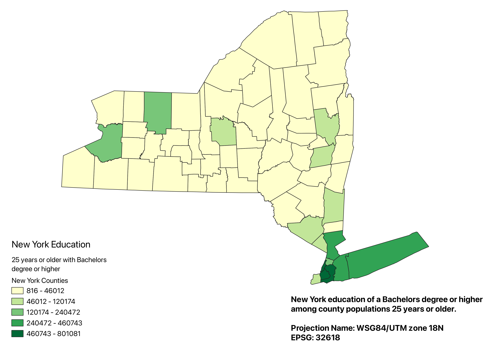
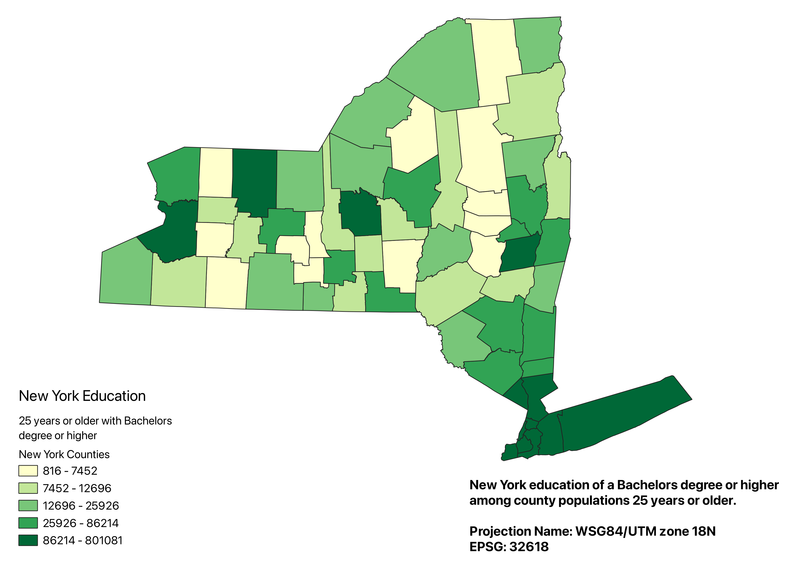

Homework 6: Census data choropleth
Miles MacLean
Natural Break NY Education Choropleth
This map shows a choropleth in a natural break of the New York population. The choropleth shows the numeric population of people 25 years or older that have obtained a bachelors degree or higher per county. The high density educated areas lie mostly within the city limits of New York City due to it's incredibly high population.

Equal Count NY Education Choropleth
This map shows a choropleth in a equal count break of the New York population. The choropleth shows the numeric population at 25 years or older that has obtained a bachelors degree or higher per county. This natural break map has been added to show a map that accounts for the lesser populated, more rural parts of New York thus giving the education ratio a greater representation.

Data
insert: link to csv
insert: link to shapefile